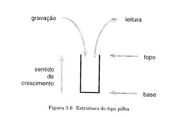
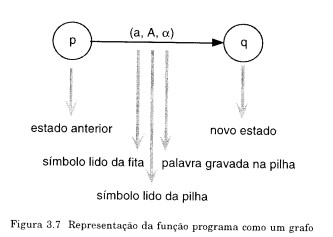

4.2.Automato com Pilha
É similar ao Autômato Finito, incluindo uma pilha como memória auxiliar e a facilidade de não-determinístico. A pilha é independente da fita de entrada e não possui limite máximo de tamanho. Estruturalmente sua principal característica é que o ultimo símbolo gravado é o primeiro a ser lido, como ilustrado na figura abaixo.

A base de uma pilha é fixa e define o seu início. O topo é variável e define a posição do último símbolo gravado.
A facilidade de não-determinístico é importante e necessária, pois aumenta o poder computacional dos Autômatos com Pilha, permitindo reconhecer exatamente a Classe das Linguagens Livres do Contexto. Por exemplo, o reconhecimento da linguagem:
{WW^r | w é a palavra sobre {a, b }}
só é possível por um Autômato com Pilha Não-Determinístico.
O modelo Autômato com Pilha possui duas definições universalmente aceitas que diferem no critério de parada do autômato, como segue:
Um Autômato com Pilha ou Autômato com Pilha Não-Determinístico é composto, basicamente, por quatro partes, como segue:
A unidade de controle possui um número finito e predefinidos de estados. Possui uma cabeça fita e uma cabeça de pilha, como segue:
Um Autômato com Pilha Não-Determinístico (APN) ou simplesmente Autômato com Pilha (AP) é uma 6-upla:
M = ( ∑, Q, δ, q_0, F, V)
Onde:
δ: Q x (∑ Ս {ε, ?}) x (V Ս {ε, ?}) → 2^(Q×v^* )
a qual é uma função parcial;

A classe das linguagens reconhecidas pelos Autômatos com pilha é igual à Classes das Linguagens Livres do Contexto. A demonstração apresentada a seguir é dividida em dois teoremas. O primeiro teorema apresenta a construção de um AP a partir de uma GLC qualquer, permitindo estabelecer as seguintes conclusões.